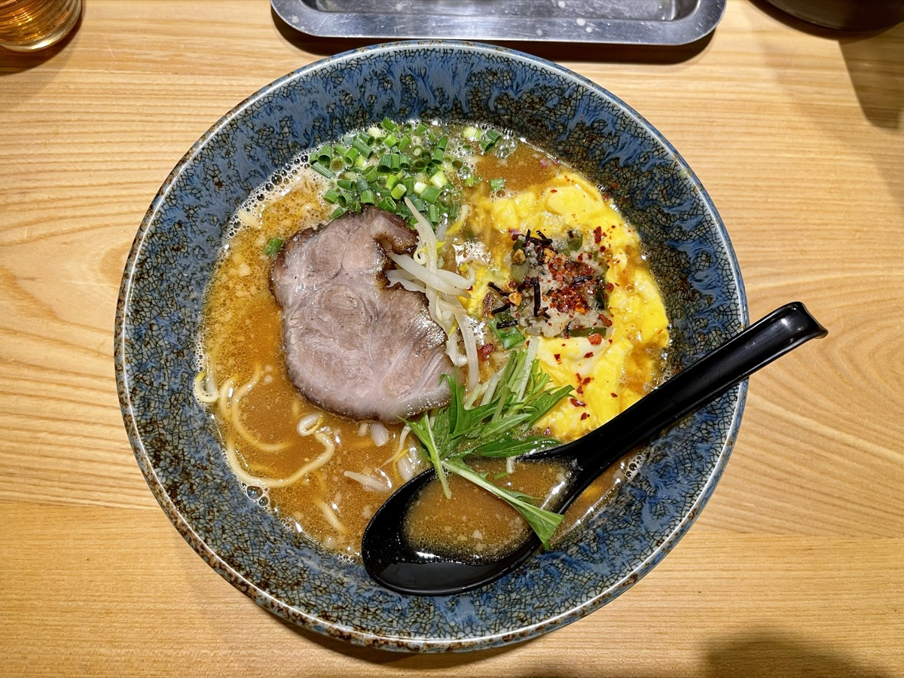

北海道に行きたいと思い続けて、何年経っただろう。バイク乗りなら一度は夢見る、あの「地平線まで続く一本道」を自分のバイクで走ること。2021年6月、ようやくその夢を叶えた最初の1日を残しておく。
相棒はSR400──排気量400cc、空冷単気筒のシンプルなバイク。荷物を積み込んでフェリーに乗り込んだ瞬間、もうテンションが上がりすぎて眠れなかった。
さんふらわあに乗り込む
フェリーはさんふらわあ（商船三井フェリー）の大洗発苫小牧行き。夜に出航して翌日昼過ぎに着く、ライダーにはおなじみのルートだ。乗船手続きを終え、SR400を甲板に固定してもらったあとは客室でのんびりする時間になる。
出航後はレストランで夕食、大浴場で汗を流して早めに就寝。翌日昼過ぎに苫小牧に着く。約19時間の船旅。バイクの上では走れない時間を、フェリーの上でゆっくり過ごすのもライダーの旅の一部だ。
苫小牧上陸、初めての北海道
翌日の昼過ぎ、苫小牧西港に着いた。フェリーの船尾から上陸するときの「ここから北海道だ」という感覚は、何度経験してもいい。SR400を下ろして給油してから、最初の目的地・札幌へ向かった。

札幌・赤レンガ庁舎を歩く
苫小牧から札幌までは下道で約1時間半。市街地に入って最初に向かったのは北海道庁旧本庁舎、通称「赤レンガ庁舎」。1888年に完成したアメリカン・ネオバロック様式の建物で、札幌のランドマークだ。

夕方の光が赤レンガに当たって、写真で見るより重厚な印象。観光客はまばらで、ベンチに座って建物を眺めながら、これから1週間走る北海道の景色を想像した。
フェリーの疲れを溶かした、札幌の味噌ラーメン
札幌に来たらラーメンを食べないと帰れない。あらかじめ調べていたラーメン一粒庵へ。札幌駅近くの行列店で、看板メニューは元気のでる味噌ラーメン。北海道の味噌の深さと、ラードのコクが効いていて、フェリーの船旅で疲れた体に染みた。

明日はオロロンライン──札幌で迎える最初の夜
初日の宿はホテルリブマックス札幌駅前店。札幌駅の近くで、SR400を駐車場に停めて荷物を部屋に運び、シャワーを浴びてベッドに沈み込んだ。明日からはオロロンラインを北上して、稚内・宗谷岬を目指す。北海道の本番はここからだ。
フェリーから降りた瞬間、北海道の空気はもう違っていた。ここから1週間、地平線まで走る。